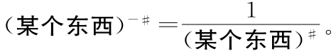
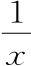

我们不知道（某个东西）-＃是什么意思，不过可以再试一下前面的策略。请注意我们在推广时所根据的语句只涉及幂的相加：（某个东西）a+b=（某个东西）a（某个东西）b。幂的相减是怎样的呢，比如（某个东西）a-b？其实将a-b写成（a）+（-b）的形式，就能将原来的语句变成用加法谈论减法。利用这个思想，再加上我们刚刚得到的（某个东西）0=1，我们可以这样做：
1=（某个东西）0=（某个东西）＃-＃
=（某个东西）＃+（-＃）=（某个东西）＃（某个东西）-＃。
现在如果两边同时除以（某个东西）＃，得出的语句就能告诉我们如何将负数幂用正数幂的语言表示。我们把它写下来：
我们的间接定义要求这个必须成立

在课本上，这样的项通常被称为x的“倒数”。我们并不经常用到这个概念的名称，所以怎么称呼其实无所谓。“倒数”有点不清楚，我们干脆就叫它“倒立”，因为

就是x倒立过来。